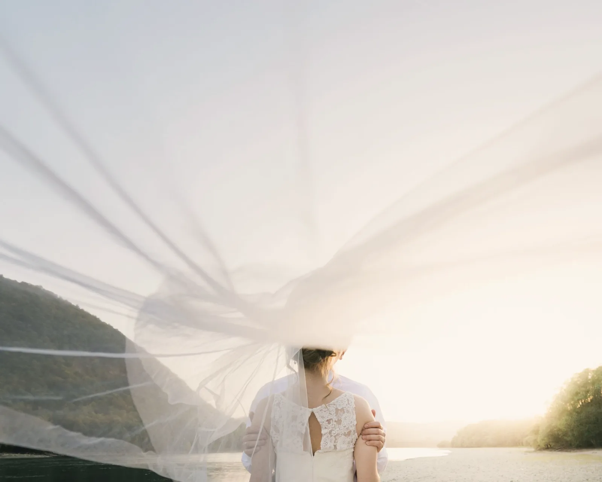
Clona, svadobná fotografka Ema v Banskej Štiavnici
Fotí Ema · Banská Štiavnicaf/2.8 · 1/800 s · ISO 100 · 14 mm
Svadby a portréty v Banskej Štiavnici a po celom Slovensku.
Celý deň od príprav po čepčenie za 990 €. Prvých 20 fotiek do 4 dní, celú galériu do 6 týždňov.
Jeden deň, sedem políčok.
Od perlových gombíkov ráno po sviečky na stole večer. Detaily, ktoré si o pár rokov zapamätáte viac než pózy.
Pás posuniete ťahaním, prstom alebo šípkami.
-
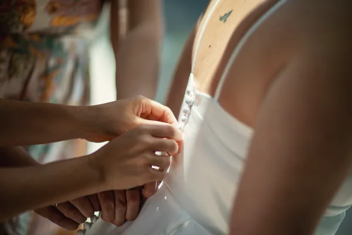
Ráno, prípravyf/1.2 · 1/2500 s · ISO 100 -
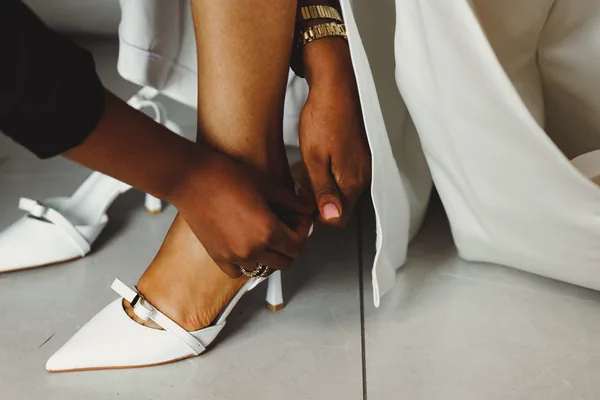
Topánkyf/2.8 · 1/250 s · ISO 400 -
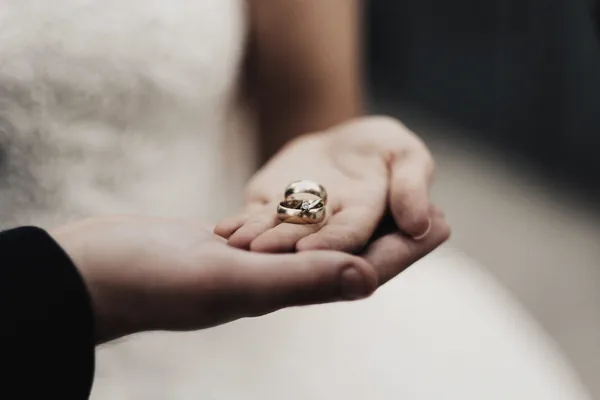
Obrúčkyf/1.2 · ISO 160 · 56 mm -
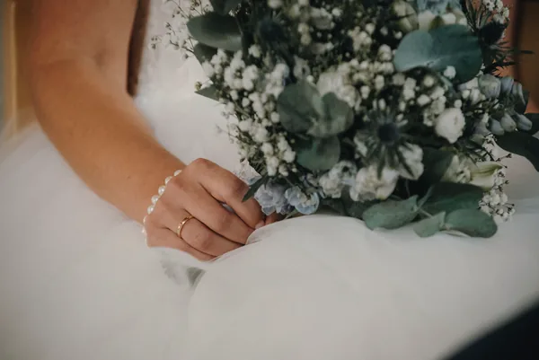
Po obradef/4.5 · 1/320 s · ISO 4000 -
Cestou mestomf/2.2 · 1/200 s · ISO 320 -
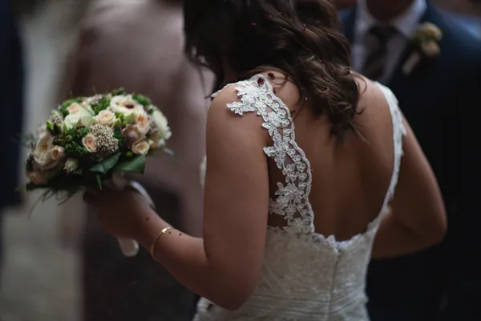
Medzi hosťamif/1.2 · 1/2000 s · ISO 100 -
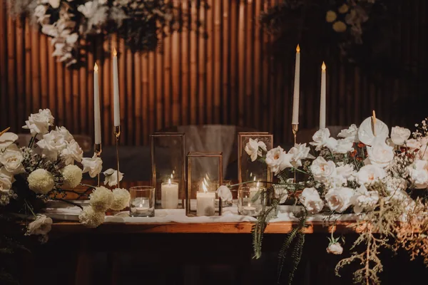
Večerf/1.8 · 1/125 s · ISO 400
Čísla pri fotkách sú skutočné údaje EXIF, ako ich autori fotiek zverejnili. Kde ich nezverejnili, chýbajú.
Tri svadby, tri miesta.
Štiavnica je hotová kulisa, stačí počkať na svetlo. Portréty plánujem na poslednú hodinu pred západom slnka, keď je najmäkšie.
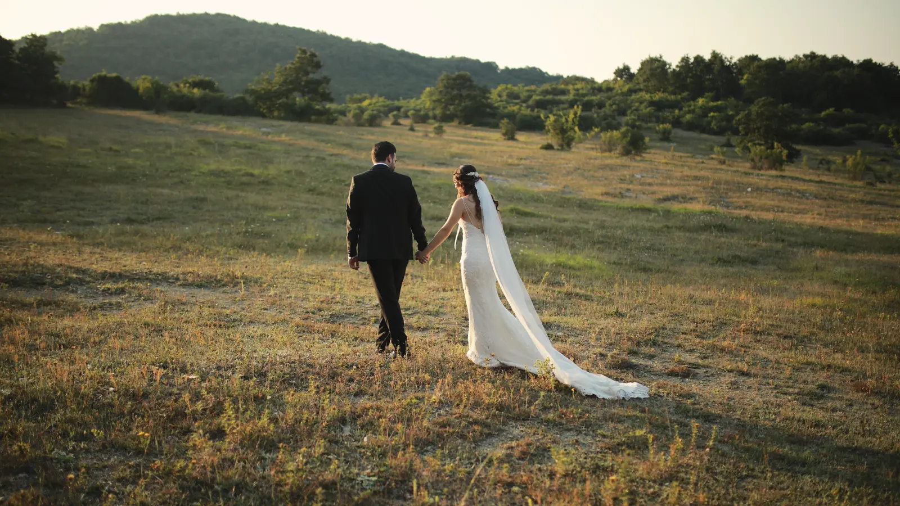
Kalvária, september
Obrad v meste, potom pomalá prechádzka lúkou pod Kalváriou. Svetlo išlo s nami až do západu.
f/1.4 · 1/3000 s · ISO 125 · 35 mm
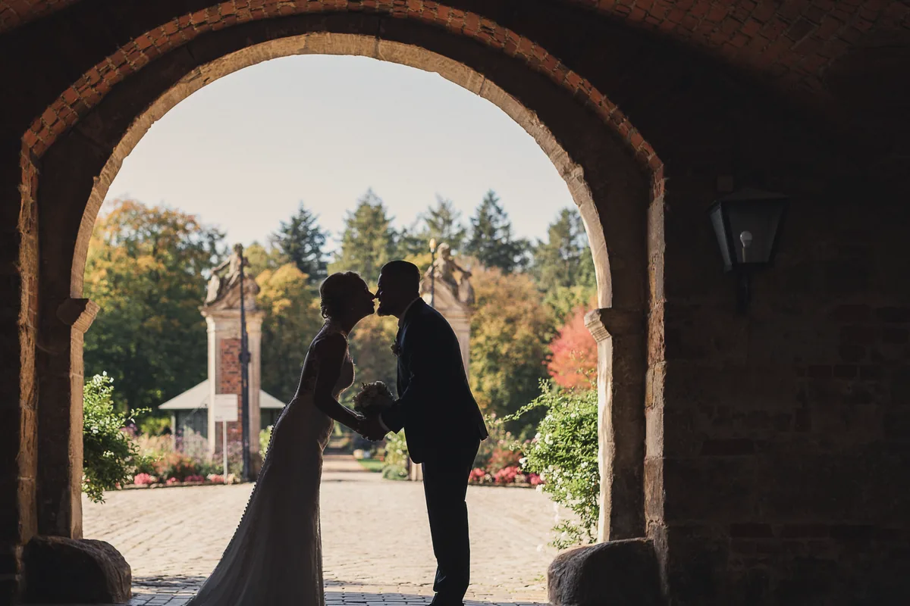
Starý zámok, október
Pod klenbou brány sa schováte pred vetrom aj pred dažďom. Proti svetlu z nádvoria ostanú len obrysy a to je presne ten záber.
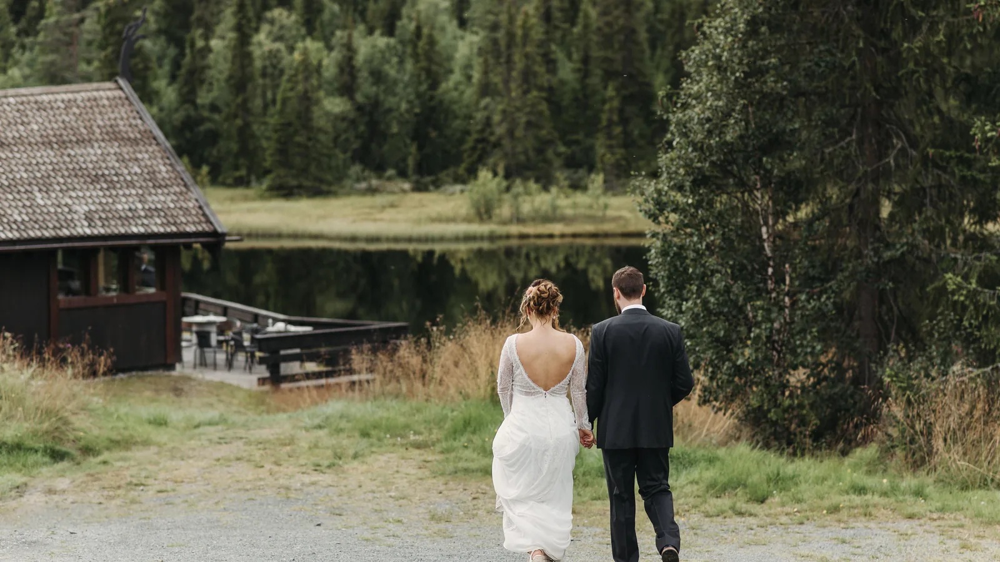
Počúvadlo, august
Malá svadba pri jazere, tridsať hostí a drevená chata. Na breh sme odbehli tesne pred večerou.
f/2.5 · 1/2500 s · 85 mm
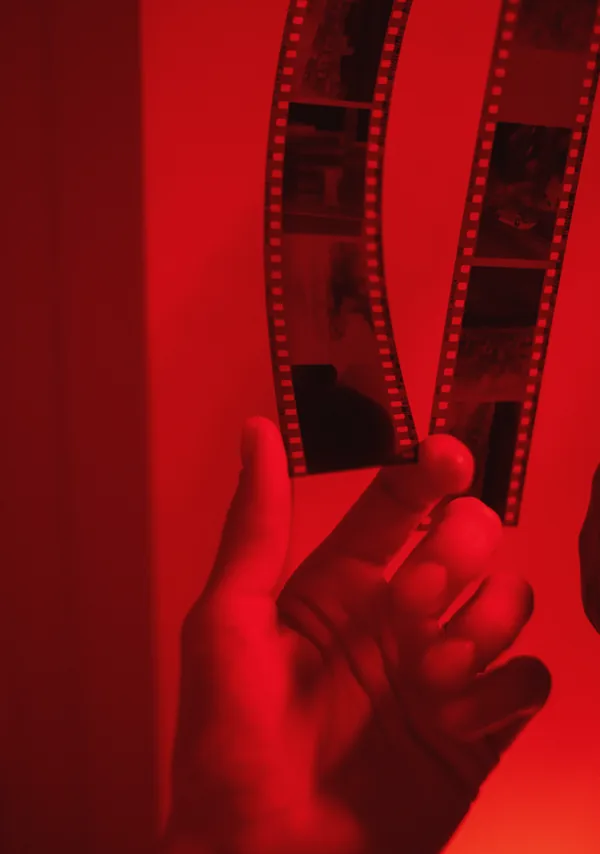
Ako pracujem.
Som Ema. Svadby fotím od roku 2016, najradšej tie, kde sa nikto nemusí hrať na modela. Fotím sama, takže na vašej svadbe nebude asistent, ktorého nepoznáte. Ateliér mám v Banskej Štiavnici, za svadbami cestujem po celom Slovensku.
Ukážkový text. Na vašom webe tu bude vaša fotka a váš príbeh.
Stretnutie online
45 minút, videohovor
Prejdeme program dňa, miesta a ľudí, ktorí nesmú chýbať. Potom vám pošlem časový plán fotenia.
Deň svadby
podľa balíka, od 3 do 15 hodín
Fotím nenápadne, bez naháňania a dlhého aranžovania. Na portréty si vezmeme 30 až 60 minút v najlepšom svetle.
Výber a úprava
prvých 20 fotiek do 4 dní
Vyberiem zábery, na ktoré sa budete chcieť pozerať aj o desať rokov, a každý upravím ručne. Farby ladím ako jeden film.
Galéria do 6 týždňov
online, na stiahnutie
Všetky fotky v plnom rozlíšení na tlač aj zmenšené do mobilu. Galéria ostane online rok, aby ste ju stihli poslať celej rodine.
Balíky a ceny.
Ceny sú konečné, nie som platiteľka DPH. Termín držím po zálohe 30 %, zvyšok platíte po odovzdaní galérie. Platia pre svadby v roku 2027.
-
Obrad
390 €do 3 hodín
- Obrad a gratulácie
- Skupinové fotky s rodinou
- Portréty vo dvojici, 30 minút
- Okolo 150 upravených fotiek
- Galéria do 4 týždňov
-
Pol dňa
690 €do 6 hodín
- Odobierka, obrad a gratulácie
- Portréty vo dvojici, 60 minút
- Hostina po prvý tanec
- Okolo 350 upravených fotiek
- Galéria do 6 týždňov
-
Celý deň
990 €do 15 hodín
- Ranné prípravy u oboch
- Všetko z balíka Pol dňa
- Hostina po polnočné čepčenie
- Okolo 600 upravených fotiek
- 30 tlačených fotiek 13 × 18 cm
Doplnky a portréty
- Portréty v iný deň
- 150 €
- 90 minút v šatách na mieste podľa vás, okolo 40 fotiek.
- Rande pred svadbou
- 100 €
- Hodina spolu ešte pred svadbou, aby ste si zvykli na foťák. Okolo 20 fotiek.
- Portrétne fotenie bez svadby
- 190 €
- Páry, rodiny aj osobné portréty, 90 minút, okolo 40 fotiek.
- Hodina navyše
- 50 €
- Keď sa zábava natiahne, rozhodnete sa na mieste.
- Cestovné
- 0,30 €/km
- V Štiavnici a do 30 km v cene, ďalej za každý kilometer tam aj späť.
Voľné soboty 2027.
Leto sa plní rok vopred. Plná bodka je obsadená sobota, prázdnu si môžete overiť ťuknutím.
obsadenévoľné, overíte ťuknutím
Január 5 voľných
Február 4 voľné
Marec 3 voľné
- 27
Apríl 2 voľné
- 10
- 24
Máj 1 voľná
- 1
- 8
- 22
- 29
Jún 1 voľná
- 5
- 12
- 26
Júl 1 voľná
- 3
- 10
- 17
- 31
August obsadený
- 7
- 14
- 21
- 28
September 1 voľná
- 4
- 18
- 25
Október 3 voľné
- 2
- 16
November 4 voľné
December 3 voľné
- 25
Piatky a svadby cez týždeň sú väčšinou voľné, stačí napísať dátum. Stav k 19. novembru 2026.
Otázky pred rezerváciou.
Koľko fotiek dostaneme?
Podľa balíka okolo 150, 350 alebo 600 upravených fotiek. Neposielam stovky podobných záberov, každú fotku vyberám.
Fotíte aj mimo Banskej Štiavnice?
Áno, po celom Slovensku. V Štiavnici a do 30 km je cesta v cene, ďalej účtujem 0,30 € za kilometer. Pri svadbe ďalej ako 150 km potrebujem nocľah, ten platíte vy.
Ako si termín rezervujeme?
Napíšete mi dátum a miesto, ja potvrdím, či je voľný. Pošlem zmluvu a termín držím po zálohe 30 %. Zvyšok platíte až po odovzdaní galérie.
Čo ak bude pršať?
Fotíme pod dáždnikmi, v podbrání alebo vo vnútri. Mám so sebou dva priesvitné dáždniky a vlastné svetlo do tmavých sál.
Upravujete fotky aj čiernobielo?
Áno, asi desatinu fotiek pošlem aj čiernobielo. Farby ladím jednotne, aby celá galéria vyzerala ako jeden film.
Robíte aj video?
Nie, len fotky. Rada vám odporučím kameramana, s ktorým si na svadbe nebudeme prekážať.
Môžeme fotky tlačiť a zdieľať?
Áno. Dostanete plné rozlíšenie a licenciu na osobné použitie, tlač aj zdieľanie. Ak by som chcela niektorú fotku ukázať na svojom webe, najprv sa vás opýtam.
Napíšte mi dátum a miesto.
Odpovedám do 24 hodín v pracovné dni. V sobotu fotím, ozvem sa v nedeľu večer.
- Ateliér
- Svetlomerná 4, 969 01 Banská Štiavnica
stretnutia po dohode - ahoj@clona.example
- Telefón
- 0XX XXX XXX (vymyslené číslo)
- Odpisujem
- pondelok až piatok, 9:00 až 17:00